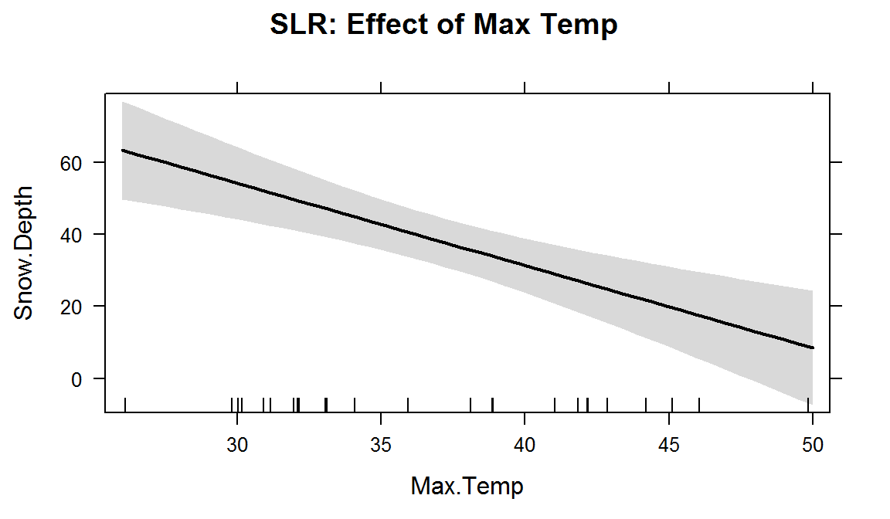
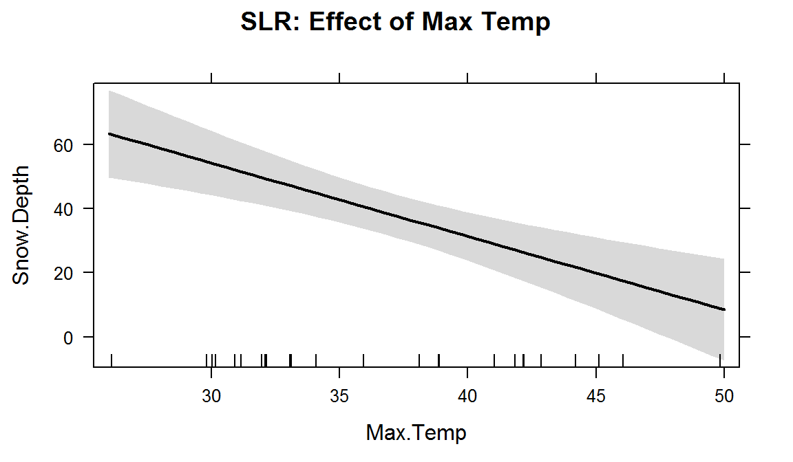

Chapter 8 Multiple linear regression
8.1 Going from SLR to MLR
In many situations, especially in observational studies, it is unlikely that the system is simple enough to be characterized by a single predictor variable. In experiments, if we randomly assign levels of a predictor variable we can assume that the impacts of other variables cancel out as a direct result of the random assignment. But it is possible even in these experimental situations that we can “improve” our model for the response variable by adding additional predictor variables that explain additional variation in the responses, reducing the amount of unexplained variation. This can allow more precise inferences to be generated from the model. As mentioned previously, it might be useful to know the sex or weight of the subjects in the Beers vs BAC study to account for more of the variation in the responses – this idea motivates our final topic: multiple linear regression (MLR) models. In observational studies, we can think of a suite of characteristics of observations that might be related to a response variable. For example, consider a study of yearly salaries and variables that might explain the amount people get paid. We might be most interested in seeing how incomes change based on age, but it would be hard to ignore potential differences based on sex and education level. Trying to explain incomes would likely require more than one predictor variable and we wouldn’t be able to explain all the variability in the responses just based on gender and education level, but a model using those variables might still provide some useful information about each component and about age impacts on income after we adjust (control for) sex and education. The extension to MLR allows us to incorporate multiple predictors into a regression model. Geometrically, this is a way of relating many different dimensions (number of \(x\text{'s}\)) to what happened in a single response variable (one dimension).
We start with the same model as in SLR except now we allow \(K\) different \(x\text{'s}\):
\[y_i = \beta_0 + \beta_1x_{1i} + \beta_2x_{2i}+ \ldots + \beta_Kx_{Ki} + \varepsilon_i\]
Note that if \(K=1\), we are back to SLR. In the MLR model, there are \(K\) predictors and we still have a y-intercept. The MLR model carries the same assumptions as an SLR model with a couple of slight tweaks specific to MLR (see Section 8.2 for the details on the changes to the validity conditions).
We are able to use the least squares criterion for estimating the regression coefficients in MLR, but the mathematics are beyond the scope of this course. The lm function takes care of finding the least squares coefficients using a very sophisticated algorithm69. The estimated regression equation it returns is:
\[\hat{y}_i = b_0 + b_1x_{1i} +b_2x_{2i}+\ldots+b_Kx_{Ki}\]
where each \(b_k\) estimates its corresponding parameter \(\beta_k\).
An example of snow depths at some high elevation locations on a day in April provides a nice motivation for these methods. A random sample of \(n=25\) MT locations (from the population of \(N=85\) at the time) were obtained from the Natural Resources Conversation Service’s website (http://www.wcc.nrcs.usda.gov/snotel/Montana/montana.html) a few years ago. Information on the snow depth (Snow.Depth) in inches, daily Minimum and Maximum Temperatures (Min.Temp and Max.Temp) in \(^\circ F\) and elevation of the site (Elevation) in feet. A snow science researcher (or spring back-country skier) might be interested in understanding Snow depth as a function of Minimum Temperature, Maximum Temperature, and Elevation. One might assume that colder and higher places will have more snow, but using just one of the predictor variables might leave out some important predictive information. The following code loads the data set and makes the scatterplot matrix (Figure 8.1) to allow some preliminary assessment of the pairwise relationships.
snotel_s <- read.csv("http://www.math.montana.edu/courses/s217/documents/snotel_s.csv")
snotel2 <- snotel_s[,c(1:2,4:6,3)] #Reorders columns for nicer pairs.panel display
require(psych)
pairs.panels(snotel2[,-c(1:2)], ellipse=F,
main="Scatterplot matrix of SNOTEL Data")Figure 8.1: Scatterplot matrix of the SNOTEL data.
It appears that there are many strong linear relationships between the variables, with Elevation and Snow Depth having the largest magnitude, r = 0.80. Higher temperatures seem to be associated with less snow - not a big surprise so far! There might be an outlier at an elevation of 7400 feet and a snow depth below 10 inches that we should explore further.
A new issue arises in attempting to build MLR models called multicollinearity. Again, it is a not surprise that temperature and elevation are correlated but that creates a problem if we try to put them both into a model to explain snow depth. Is it the elevation, temperature, or the combination of both that matters for getting and retaining more snow? Correlation between predictor variables is called multicollinearity and makes estimation and interpretation of MLR models more complicated than in SLR. Section 8.5 deals with this issue directly and discusses methods for detecting its presence. For now, remember that in MLR this issue sometimes makes it difficult to disentangle the impacts of different predictor variables on the response when the predictors share information – when they are correlated.
To get familiar with this example, we can start with fitting some potential SLR models and plotting the estimated models. Figure 8.2 contains the result for the SLR using Elevation and results for two temperature based models are in Figure 8.3. Snow Depth is selected as the obvious response variable both due to skier interest and potential scientific causation (snow can’t change elevation but elevation could be the driver of snow deposition and retention).

Figure 8.2: Plot of estimated SLR model for Snow Depth with Elevation as the predictor.
Based on the model summaries provided below, the three estimated SLR models are:
\[\begin{array}{rl} \widehat{\text{SnowDepth}}_i &= -72.006 + 0.0163\text{ Elevation}_i, \\ \widehat{\text{SnowDepth}}_i &= 174.096 - 4.884\text{ MinTemp}_i,\text{ and} \\ \widehat{\text{SnowDepth}}_i &= 122.672 - 2.284\text{ MaxTemp}_i. \end{array}\]
The plots of the estimated models reinforce our expected results, showing a positive change in Snow Depth for higher Elevations and negative impacts for increasing temperatures on Snow Depth. These plots are made across the observed range70 of the predictor variable and help us to get a sense of the total impacts of predictors. For example, for elevation in Figure 8.2, the smallest observed value was 4925 feet and the largest was 8300 feet. The regression line goes from estimating a mean snow depth of 8 inches to 63 inches. That gives you some practical idea of the size of the estimated Snow Depth change for the changes in Elevation observed in the data. Putting this together, we can say that there was around a 55 inch change in predicted snow depths for a close to 3400 foot increase in elevation. This helps make the slope coefficient of 0.0163 in the model more easily understood. Remember that in SLR, the range of \(x\) matters just as much as the units of \(x\) in determining the practical importance and size of the slope coefficient. A value of 0.0163 looks small but is actually at the heart of a pretty good model for predicting snow depth. A one foot change of elevation is “tiny” here relative to changes in the response so the slope coefficient can be small and still amount to big changes in the predicted response across the range of values of \(x\). If the Elevation had been recorded in thousands of feet, then the slope would have been \(0.0163*1000=16.3\) inches in change in mean Snow Depth for a 1000 foot increase in elevation.
The plots of the two estimated temperature models in Figure 8.3 suggest a similar change in the responses over the range of observed temperatures. Those predictors range from 22\(^\circ F\) to 34\(^\circ F\) (minimum temperature) and from 26\(^\circ F\) to 50\(^\circ F\) (maximum temperature). This tells us a 1\(^\circ F\) increase in either temperature is a greater proportion of the observed range of each predictor than a 1 unit (foot) increase in elevation, so these two variables will generate larger apparent magnitudes of slope coefficients. But having large slope coefficients is no guarantee of a good model – in fact, the elevation model has the highest \(R^2\) value of these three models even though its slope coefficient looks tiny compared to the other models.
 

Figure 8.3: Plots of two estimated SLR models using Min Temp (top panel) and Max Temp (bottom panel) as predictors. Note that each of these results are from models with a single predictor variable.
m1 <- lm(Snow.Depth~Elevation, data=snotel2)
m2 <- lm(Snow.Depth~Min.Temp, data=snotel2)
m3 <- lm(Snow.Depth~Max.Temp, data=snotel2)
require(effects)
plot(allEffects(m1, xlevels=list(Elevation=snotel2$Elevation)),
main="SLR: Effect of Elevation")
plot(allEffects(m2, xlevels=list(Min.temp=snotel2$Min.Temp)),
main="SLR: Effect of Min Temp")
plot(allEffects(m3, xlevels=list(Max.Temp=snotel2$Max.Temp)),
main="SLR: Effect of Max Temp")summary(m1)##
## Call:
## lm(formula = Snow.Depth ~ Elevation, data = snotel2)
##
## Residuals:
## Min 1Q Median 3Q Max
## -36.416 -5.135 -1.767 7.645 23.508
##
## Coefficients:
## Estimate Std. Error t value Pr(>|t|)
## (Intercept) -72.005873 17.712927 -4.065 0.000478
## Elevation 0.016275 0.002579 6.311 1.93e-06
##
## Residual standard error: 13.27 on 23 degrees of freedom
## Multiple R-squared: 0.634, Adjusted R-squared: 0.618
## F-statistic: 39.83 on 1 and 23 DF, p-value: 1.933e-06summary(m2)##
## Call:
## lm(formula = Snow.Depth ~ Min.Temp, data = snotel2)
##
## Residuals:
## Min 1Q Median 3Q Max
## -26.156 -11.238 2.810 9.846 26.444
##
## Coefficients:
## Estimate Std. Error t value Pr(>|t|)
## (Intercept) 174.0963 25.5628 6.811 6.04e-07
## Min.Temp -4.8836 0.9148 -5.339 2.02e-05
##
## Residual standard error: 14.65 on 23 degrees of freedom
## Multiple R-squared: 0.5534, Adjusted R-squared: 0.534
## F-statistic: 28.5 on 1 and 23 DF, p-value: 2.022e-05summary(m3)##
## Call:
## lm(formula = Snow.Depth ~ Max.Temp, data = snotel2)
##
## Residuals:
## Min 1Q Median 3Q Max
## -26.447 -10.367 -4.394 10.042 34.774
##
## Coefficients:
## Estimate Std. Error t value Pr(>|t|)
## (Intercept) 122.6723 19.6380 6.247 2.25e-06
## Max.Temp -2.2840 0.5257 -4.345 0.000238
##
## Residual standard error: 16.25 on 23 degrees of freedom
## Multiple R-squared: 0.4508, Adjusted R-squared: 0.4269
## F-statistic: 18.88 on 1 and 23 DF, p-value: 0.0002385Since all three variables look like they are potentially useful in predicting snow depth, we want to consider if an MLR model might explain more of the variability in Snow Depth. To fit an MLR model, we use the same general format as in other topics but with adding “+” between any additional predictors71 we want to add to the model, y~x1+x2+...+xk:
m4 <- lm(Snow.Depth~Elevation+Min.Temp+Max.Temp, data=snotel2)
summary(m4)##
## Call:
## lm(formula = Snow.Depth ~ Elevation + Min.Temp + Max.Temp, data = snotel2)
##
## Residuals:
## Min 1Q Median 3Q Max
## -29.508 -7.679 -3.139 9.627 26.394
##
## Coefficients:
## Estimate Std. Error t value Pr(>|t|)
## (Intercept) -10.506529 99.616286 -0.105 0.9170
## Elevation 0.012332 0.006536 1.887 0.0731
## Min.Temp -0.504970 2.042614 -0.247 0.8071
## Max.Temp -0.561892 0.673219 -0.835 0.4133
##
## Residual standard error: 13.6 on 21 degrees of freedom
## Multiple R-squared: 0.6485, Adjusted R-squared: 0.5983
## F-statistic: 12.91 on 3 and 21 DF, p-value: 5.328e-05plot(allEffects(m4), main="MLR model with Elev, Min & Max Temps")
Figure 8.4: Term-plots for the MLR for Snow Depth based on Elevation, Min Temp and Max Temp. Note that the x-axis ranges are different than those used in Figures 8.2 and 8.3 for the comparably SLR models.
Based on the output, the estimated MLR model is
\[\widehat{\text{SnowDepth}}_i = -10.51 + 0.0123\text{ Elevation}_i -0.505\text{ MinTemp}_i - 0.562\text{ MaxTemp}_i.\]
The direction of the estimated slope coefficients were similar but they all changed in magnitude as compared to the respective SLRs, as seen in the estimated term-plots from the MLR model in Figure 8.4.
There are two ways to think about the changes from individual SLR slope coefficients to the similar MLR results.
Each term in the MLR is the result for estimating each slope after controlling for the other two variables (and we will always use this interpretation any time we interpret MLR effects). For example, “corrected for” or “adjusted for” the variability that is explained by the temperature variables.
Because of multicollinearity in the predictors, the variables might share information that is useful for explaining the variability in the response variable, so the slope coefficients of each predictor get perturbed because the model cannot separate their effects on the response. This issue disappears when the predictors are uncorrelated or even just minimally correlated.
There are some ramifications of multicollinearity in MLR:
Adding variables to a model might lead to almost no improvement in the overall variability explained by the model.
Adding variables to a model can cause slope coefficients to change signs as well as magnitudes.
Adding variables to a model can lead to inflated standard errors for some or all of the coefficients (this is less obvious but is related to the shared information in predictors making it less clear what slope coefficient to use for each variable).
In extreme cases of multicollinearity, it may even be impossible to obtain any coefficient estimates.
These seem like pretty serious issues and they are but there are many, many situations where we proceed with MLR even in the presence of potentially correlated predictors. It is likely that you have heard or read about inferences from models that are dealing with this issue – for example, medical studies often report the increased risk of death from some behavior or trait after controlling for sex, age, etc. In many research articles, it is becoming common practice to report the slope for a variable most of interest with it in the model alone (SLR) and in models after adjusting for the other variables that are expected to matter. These types of results are built with MLR or related multiple-predictor models like MLR.
8.2 Validity conditions in MLR
But before we get to oexcited about any results, we should always assess our validity conditions. For MLR, they are similar to those for SLR:
Quantitative variables condition:
Independence of observations:
This assumption is about the responses – we must assume that they were collected in a fashion so that they can be assumed to be independent. This implies that we also have independent random errors.
This is not an assumption about the predictor variables!
Linearity of relationship (NEW VERSION FOR MLR!):
Linearity is assumed between the response variable and each explanatory variable (\(y\) and each \(x\)).
We can check this two ways:
Make plots of the response versus each explanatory variable:
- Only visual evidence of a curving relationship is a problem here. Transformations of individual explanatory variables or the response are possible.
Examine the Residuals vs Fitted plot:
- When using MLR, curves in the residuals vs. fitted values suggest a missed curving relationship with at least one predictor variable, but it will not be specific as to which one is non-linear. Revisit the scatterplots to identify the source of the issue.
Multicollinearity effects checked for:
Issues here do not mean we cannot proceed with a given model, but it can impact our ability to trust and interpret the estimated terms.
Check a scatterplot or correlation matrix to assess the potential for shared information in different predictor variables.
Use the diagnostic measure called a variance inflation factor (VIF) discussed in Section 8.5 (we need to develop some ideas first to understand this measure).
Equal (constant) variance:
- Same as before since it pertains to the residuals.
Normality of residuals:
- Same as before since it pertains to the residuals.
No influential points:
Leverage is now determined by how unusual a point is for multiple explanatory variables.
The leverage values in the Residuals vs Leverage plot are scaled to add up to the degrees of freedom (df) used for the model which is the number of explanatory variables (\(K\)) plus 1, so \(K+1\).
The scale of leverages depends on the complexity of the model through the df and the sample size.
The interpretation is still that the larger the leverage value, the more leverage the point has.
The mean leverage is always (model used df)/n = (K+1)/n – so focus on the values with above average leverage.
- For example, with \(K=3\) and \(n=20\), the average leverage is \(4/20=1/5\).
High leverage points whose response does not follow the pattern defined by the other observations (now based on patterns for multiple \(x\text{'s}\) with the response) will be influential.
Use the Residual’s vs Leverage plot to identify problematic points. Explore further with Cook’s D continuing to provide a measure of the influence of each observation.
- The rules and interpretations for Cook’s D are the same as in SLR (over 0.5 is possibly influential and over is definitely influential).
While not a condition for use of the methods, a note about RA and RS is useful here in considering the scope of inference of any results. To make inferences about a population, we need to have a representative sample. If we have randomly assigned levels of treatment variables(s), then we can make causal inferences to subjects like those that we could have observed. And if we both have a representative sample and randomization, we can make causal inferences for the population. It is possible to randomly assign levels of variable(s) to subjects and still collect additional information from other explanatory (sometimes called control) variables. The causal interpretations would only be associated with the explanatory variables that were randomly assigned even though the model might contain other variables. Their interpretation still involves noting all the variables included in the model, as demonstrated below. It is even possible to include interactions between randomly assigned variables and other variables – like drug dosage and sex of the subjects. In these cases, causal inference could apply to the treatment levels but noting that the impacts differ based on the non-randomly assigned variable.
For the Snow Depth data, the conditions can be assessed as:
Quantitative variables condition:
- These are all met.
Independence of observations:
- The observations are based on a random sample of sites from the population and the sites are spread around the mountains in Montana. Many people would find it to be reasonable to assume that the sites are independent of one another but others would be worried that sites closer together in space might be more similar than they are to far-away observations (this is called spatial correlation). I (Greenwood) have been in a heated discussion with statistics colleagues about whether spatial dependency should be considered or if it is valid to ignore it in this sort of situation. It is certainly possible to be concerned about independence of observations here but it takes more advanced statistical methods to actually assess whether there is spatial dependency in these data and even in those models, the first task would be to fit this sort of model and then explore the results.
We need our diagnostic plots to assess the remaining assumptions. The same code as before will provide diagnostic plots. There is some extra code (par(...)) added to allow us to add labels to the plots to know which model is being displayed since we have so many to discuss here.
par(mfrow=c(2,2), oma=c(0,0,2,0))
plot(m4, sub.caption="Diagnostics for m4")
Figure 8.5: Diagnostic plots for model m4: \(\text{Snow.Depth}\sim \text{Elevation} + \text{Min.Temp} + \text{Max.Temp}\)
Linearity of relationship (NEW VERSION FOR MLR!):
Make plots of the response versus each explanatory variable:
- In Figure 8.1, the plots of each variable versus snow depth do not clearly show any nonlinearity except for a little dip around 7000 feet in the plot vs Elevation.
Examine the Residuals vs Fitted plot in Figure 8.5:
- Generally, there is no clear curvature in the Residuals vs Fitted panel and that would be an acceptable answer. However, there is some pattern in the smoothing line that could suggest a more complicated relationship between at least one predictor and the response. This also resembles the pattern in the Elevation vs. Snow depth panel in Figure 8.1 so that might be the source of this “problem”. This suggests that there is the potential to do a little bit better but that it is not unreasonable to proceed on with the MLR, ignoring this little wiggle in the diagnostic plot.
Multicollinearity effects checked for:
The predictors certainly share information in this application (correlations between -0.67 and -0.91) and multicollinearity looks to be a major concern in being able to understand/separate the impacts of temperatures and elevations on snow depths.
See Section 8.5 for more on this issue in these data.
Equal (constant) variance:
- While there is a little bit more variability in the middle of the fitted values, this is more an artifact of having a smaller data set with a couple of moderate outliers that fell in the same range of fitted values and maybe a little bit of missed curvature. So there is not too much of an issue with this condition.
Normality of residuals:
- The residuals are quite good in the QQ-plot, showing only a little deviation for observation 9 from a normal distribution and that deviation is extremely minor. Certainly no evidence of a violation of the normality assumption here.
No influential points:
With \(K=3\) predictors and \(n=25\) observations, the average leverage is \(4/25=0.16\). This gives us a scale to interpret the leverage values on the x-axis of the lower right panel of our diagnostic plots.
There are three higher leverage points (leverages over 0.3) with only one being influential (point 9) with Cook’s D close to 1.
- Note that point 10 had the same leverage but was not influential with Cook’s D less than 0.5.
We can explore both of these points to see how two observations can have the same leverage and different amounts of influence.
The two flagged points, observations 9 and 10 in the data set, are for the sites “Northeast Entrance” (to Yellowstone) and “Combination”. We can use the MLR equation to do some prediction for each observation and calculate residuals to see how far the model’s predictions are from the actual observed values for these sites. For the Northeast Entrance, the Max.Temp was 45, the Min.Temp was 28, and the Elevation was 7350 as you can see in this printout of just the two rows of the data set available by referencing rows 9 and 10 in the bracket from snotel2:
snotel2[c(9,10),]## ID Station Max.Temp Min.Temp Elevation Snow.Depth
## 9 18 Northeast Entrance 45 28 7350 11.2
## 10 53 Combination 36 28 5600 14.0The estimated Snow Depth for the Northeast Entrance site (observation 9) is found using the estimated model with
\[\begin{array}{rl} \widehat{\text{SnowDepth}}_9 &= -10.51 + 0.0123\text{Elevation}_9 - 0.505\text{MinTemp}_9 - 0.562\text{MaxTemp}_9 \\ & = -10.51 + 0.0123*\boldsymbol{7350} -0.505*\boldsymbol{28} - 0.562*\boldsymbol{45} \\ & = 40.465 \text{ inches,} \end{array}\]
but the observed snow depth was actually \(y_9=11.2\) inches. The observed residual is then
\[e_9=y_9-\hat{y}_9 = 11.2-40.465 = -29.265 \text{ inches.}\]
So the model “misses” the snow depth by over 29 inches with the model suggesting over 40 inches of snow but only 11 inches actually being present72.
-10.51 + 0.0123*7350 - 0.505*28 - 0.562*45## [1] 40.46511.2 - 40.465## [1] -29.265This point is being rated as influential (Cook’s D \(\approx\) 1) with a leverage of nearly 0.35 and a standardized residual (y-axis of Residuals vs. Leverage plot) of nearly -3. This suggests that even with this observation impacting/distorting the slope coefficients (that is what influence means), the model is still doing really poorly at fitting this observation. We’ll drop it and re-fit the model in a second to see how the slopes change. First, let’s compare that result to what happened for data point 10 (“Combination”) which was just as high leverage but not identified as influential.
The estimated snow depth for “Combination” is
\[\begin{array}{rl} \widehat{\text{SnowDepth}}_{10} &= -10.51 + 0.0123\text{Elevation}_{10} - 0.505\text{MinTemp}_{10} - 0.562\text{MaxTemp}_{10} \\ & = -10.51 + 0.0123*\boldsymbol{5600} -0.505*\boldsymbol{28} - 0.562*\boldsymbol{36} \\ & = 23.998 \text{ inches,} \end{array}\]
The observed snow depth here was \(y_{10} = 14.0\) inches so the observed residual is then
\[e_{10}=y_{10}-\hat{y}_{10} = 14.0-23.998 = -9.998 \text{ inches.}\]
This results in a standardized residual of around -1. This is still a “miss” but not as glaring as the previous result and also is not having a major impact on the model’s estimated slope coefficients based on the small Cook’s D value.
-10.51 + 0.0123*5600 - 0.505*28 - 0.562*36## [1] 23.99814 - 23.998## [1] -9.998Note that any predictions using this model presume that it is trustworthy, but the large Cook’s D on one observation suggests we should consider the model after removing that observation. We can re-run the model without the 9th observation using the data set snotel2[-9,].
m5 <- lm(Snow.Depth~Elevation+Min.Temp+Max.Temp, data=snotel2[-9,])
summary(m5)##
## Call:
## lm(formula = Snow.Depth ~ Elevation + Min.Temp + Max.Temp, data = snotel2[-9,
## ])
##
## Residuals:
## Min 1Q Median 3Q Max
## -29.2918 -4.9757 -0.9146 5.4292 20.4260
##
## Coefficients:
## Estimate Std. Error t value Pr(>|t|)
## (Intercept) -1.424e+02 9.210e+01 -1.546 0.13773
## Elevation 2.141e-02 6.101e-03 3.509 0.00221
## Min.Temp 6.722e-01 1.733e+00 0.388 0.70217
## Max.Temp 5.078e-01 6.486e-01 0.783 0.44283
##
## Residual standard error: 11.29 on 20 degrees of freedom
## Multiple R-squared: 0.7522, Adjusted R-squared: 0.715
## F-statistic: 20.24 on 3 and 20 DF, p-value: 2.843e-06plot(allEffects(m5), main="MLR model with NE Ent. Removed")Figure 8.6: Term-plots for the MLR for Snow Depth based on Elevation, Min Temp, and Max Temp with Northeast entrance observation removed from data set (n=24).
The estimated MLR model with \(n=24\) after removing the influential “NE Entrance” observation is
\[\widehat{\text{SnowDepth}}_i = -142.4 + 0.0214\text{ Elevation}_i +0.672\text{ MinTemp}_i +0.508\text{ MaxTemp}_i.\]
Something unusual has happened here: there is a positive slope for both temperature terms in Figure 8.6 that both contradicts reasonable expectations (warmer temperatures are related to higher snow levels?) and our original SLR results. So what happened? First, removing the influential point has drastically changed the slope coefficients (remember that was the definition of an influential point). Second, when there are predictors that share information, the results can be somewhat unexpected for some or all the predictors when they are all in the model together. Note that the Elevation term looks like what we might expect and seems to have a big impact on the predicted Snow Depths. So when the temperature variables are included in the model they might be functioning to explain some differences in sites that the Elevation term could not explain. This is where our “adjusting for” terminology comes into play. The unusual-looking slopes for the temperature effects can be explained by interpreting them as the estimated change in the response for changes in temperature after we control for the impacts of elevation. Suppose that Elevation explains most of the variation in Snow Depth except for a few sites where the elevation cannot explain all the variability and the site characteristics happen to show higher temperatures and more snow (or lower temperatures and less snow). This could be because warmer areas might have been hit by a recent snow storm while colder areas might have been missed (this is just one day and subject to spatial and temporal fluctuations in precipitation patterns). Or maybe there is another factor related to having marginally warmer temperatures that are accompanied by more snow (maybe the lower snow sites for each elevation were so steep that they couldn’t hold much snow but were also relatively colder?). Thinking about it this way, the temperature model components could provide useful corrections to what Elevation is providing in an overall model and explain more variability than any of the variables could alone. It is also possible that the temperature variables are not needed in a model with Elevation in it, are just “explaining noise”, and should be removed from the model. Each of the next sections take on various aspects of these issues and eventually lead to a general set of modeling and model selection recommendations to help you work in situations as complicated as this. Exploring the results for this model assumes we trust it and, once again, we need to check diagnostics before getting too focused on any particular results from it.
The Residuals vs. Leverage diagnostic plot in Figure 8.7 for the model fit to the data set without NE Entrance (now \(n=24\)) reveals a new point that is somewhat influential (point 22 in the data set has Cook’s D \(\approx\) 0.5). It is for a location called “Bloody \(\require{color}\colorbox{black}{Redact.}\)”73 which has a leverage of nearly 0.2 and a standardized residual of nearly -3. This point did not show up as influential in the original version of the data set with the same model but it is now. It also shows up as a potential outlier. As we did before, we can explore it a bit by comparing the model predicted snow depth to the observed snow depth. The predicted snow depth for this site is
\[\widehat{\text{SnowDepth}}_{22} = -142.4 + 0.0214*\boldsymbol{7550} +0.672*\boldsymbol{26} +0.508*\boldsymbol{39} = 56.45 \text{ inches.}\]
The observed snow depth was 27.2 inches, so the estimated residual is -39.25 inches. Again, this point is potentially influential and an outlier. Additionally, our model contains results that are not what we would have expected a priori, so it is not unreasonable to consider removing this observation to be able to work towards a model that fully trustworthy.
par(mfrow=c(2,2), oma=c(0,0,2,0))
plot(m5, sub.caption="Diagnostics for m5")
Figure 8.7: Diagnostic plots for MLR for Snow Depth based on Elevation, Min Temp and Max Temp with Northeast entrance observation removed from data set.
This worry-some observation is located in the 22nd row of the original data set:
snotel2[22,]## ID Station Max.Temp Min.Temp Elevation Snow.Depth
## 22 36 Bloody [Redact.] 39 26 7550 27.2With the removal of both the “Northeast Entrance” and “Bloody \(\require{color}\colorbox{black}{Redact.}\)” sites, there are \(n=23\) observations remaining. This model (m6) seems to contain residual diagnostics (Figure 8.8) that are finally generally reasonable.
m6 <- lm(Snow.Depth~Elevation+Min.Temp+Max.Temp, data=snotel2[-c(9,22),])
summary(m6)##
## Call:
## lm(formula = Snow.Depth ~ Elevation + Min.Temp + Max.Temp, data = snotel2[-c(9,
## 22), ])
##
## Residuals:
## Min 1Q Median 3Q Max
## -14.878 -4.486 0.024 3.996 20.728
##
## Coefficients:
## Estimate Std. Error t value Pr(>|t|)
## (Intercept) -2.133e+02 7.458e+01 -2.859 0.0100
## Elevation 2.686e-02 4.997e-03 5.374 3.47e-05
## Min.Temp 9.843e-01 1.359e+00 0.724 0.4776
## Max.Temp 1.243e+00 5.452e-01 2.280 0.0343
##
## Residual standard error: 8.832 on 19 degrees of freedom
## Multiple R-squared: 0.8535, Adjusted R-squared: 0.8304
## F-statistic: 36.9 on 3 and 19 DF, p-value: 4.003e-08par(mfrow=c(2,2), oma=c(0,0,2,0))
plot(m6, sub.caption="Diagnostics for m6")
Figure 8.8: Diagnostic plots for MLR for Snow Depth based on Elevation, Min Temp and Max Temp with two observations removed (\(n=23\)).
It is hard to suggest that there any curvature issues and the slight variation in the Scale-Location plot is mostly due to few observations with fitted values around 30 happening to be well approximated by the model. The normality assumption is generally reasonable and no points seem to be overly influential on this model (finally!).
The term-plots (Figure 8.9) show that the temperature slopes are both positive although in this model Max.Temp seems to be more “important” than Min.Temp. We have ruled out individual influential points as the source of un-expected directions in slope coefficients and the more likely issue is multicollinearity – in a model that includes Elevation, the temperature effects may be positive, again acting with the Elevation term to generate the best possible predictions of the observed responses. Throughout this discussion, we have mainly focused on the slope coefficients and diagnostics. We have other tools in MLR to more quantitatively assess and compare different regression models that are considered in the next sections.
plot(allEffects(m6), main="MLR model with n=23")
Figure 8.9: Term-plots for the MLR for Snow Depth based on Elevation, Min Temp and Max Temp with two observations removed.
8.3 Interpretation of MLR terms
Since these results (finally) do not contain any highly influential points, we can formally discuss interpretations of the slope coefficients and how the term-plots (Figure 8.9) aid our interpretations. Term-plots in MLR are constructed by holding all the other variables at their mean and generating predictions and 95% CIs for the mean response across the levels of observed values for each predictor variable. This idea also helps us to work towards interpretations of each term in an MLR model. For example, for Elevation, the term-plot starts at an elevation around 5000 feet and ends at an elevation around 8000 feet. To generate that line and CIs for the mean snow depth at different elevations, the MLR model of
\[\widehat{\text{SnowDepth}}_i = -213.3 + 0.0269\text{ Elevation}_i +0.984\text{ MinTemp}_i +1.243\text{ MaxTemp}_i\]
is used, but we need to have “something” to put in for the two temperature variables to predict Snow Depth for different Elevations. The typical convention is to hold the “other” variables at their means to generate these plots. This tactic also provides a way of interpreting each slope coefficient. Specifically, we can interpret the Elevation slope as: For a 1 foot increase in Elevation, we expect the mean Snow Depth to increase by 0.0269 inches, holding the minimum and maximum temperatures constant. More generally, the slope interpretation in an MLR is:
- For a 1 [units of \(\boldsymbol{x_k}\)] increase in \(\boldsymbol{x_k}\), we expect the mean of \(\boldsymbol{y}\) to change by \(\boldsymbol{b_k}\) [units of y], after controlling for [list of other explanatory variables in model].
To make this more concrete, we can recreate some points in the Elevation term-plot. To do this, we first need the mean of the “other” predictors, Min.Temp and Max.Temp.
mean(snotel2[-c(9,22),]$Min.Temp)## [1] 27.82609mean(snotel2[-c(9,22),]$Max.Temp)## [1] 36.3913We can put these values into the MLR equation and simplify the equation, to an equation that is just in terms of just Elevation given that we are holding Min.Temp and Max.Temp at their means:
\[\begin{array}{rl} \widehat{\text{SnowDepth}}_i &= -213.3 + 0.0269\text{ Elevation}_i +0.984*\boldsymbol{27.826} +1.243*\boldsymbol{36.391} \\ &= -213.3 + 0.0269\text{ Elevation}_i + 27.38 + 45.23 \\ &= \boldsymbol{-140.69 + 0.0269}\textbf{ Elevation}_\boldsymbol{i}. \end{array}\]
So at the means on the two temperature variables, the model looks like an SLR with an estimated y-intercept of -140.69 (mean Snow Depth for Elevation of 0 if temperatures are at their means) and an estimated slope of 0.0269. Then we can plot the predicted changes in \(y\) across all the values of the predictor variable (Elevation) while holding the other variables constant. To generate the needed values to define a line, we can plug various Elevation values into the simplified equation:
For an elevation of 5000 at the average temperatures, we predict a mean snow depth of \(-140.69 + 0.0269*5000 = -6.19\) inches.
For an elevation of 6000 at the average temperatures, we predict a mean snow depth of \(-140.69 + 0.0269*6000 = 20.71\) inches.
For an elevation of 8000 at the average temperatures, we predict a mean snow depth of \(-140.69 + 0.0269*8000 = 74.51\) inches.
We can plot this information (Figure 8.10) using the plot function to show the points we calculated and the lines function to add a line that connects the dots. In the plot function, we used the ylim=... option to make the scaling on the y-axis match the previous term-plot’s scaling.
par(mfrow=c(1,1))
#Making own effect plot:
elevs <- c(5000,6000,8000)
snowdepths <- c(-6.19,20.71,74.51)
plot(snowdepths~elevs, ylim=c(-20,90), cex=2, col="blue", pch=16,
main="Effect plot of elevation by hand")
lines(snowdepths~elevs, col="red", lwd=2)
Figure 8.10: Term-plot for Elevation “by-hand”, holding temperature variables constant at their means.
Note that we only needed 2 points to define the line but need a denser grid of elevations if we want to add the 95% CIs for the true mean snow depth across the different elevations since they vary as a function of the distance from the mean of the explanatory variables.
To get the associated 95% CIs, we could return to using the predict function for the MLR, again holding the temperatures at their mean values. The predict function is sensitive and needs the same variable names as used in the original model fitting to work. First we create a “new” data set using the seq function to generate the desired grid of elevations and the rep function74 to repeat the means of the temperatures for each of elevation values we need to make the plot. The code creates a specific version of the predictor variables to force the predict function to provide fitted values and CIs across different elevations with temperatures held constant that is stored in newdata1.
elevs <- seq(from=5000, to=8000, length.out=30)
newdata1 <- data.frame(Elevation=elevs, Min.Temp=rep(27.826,30),
Max.Temp=rep(36.3913,30))
newdata1## Elevation Min.Temp Max.Temp
## 1 5000.000 27.826 36.3913
## 2 5103.448 27.826 36.3913
## 3 5206.897 27.826 36.3913
## 4 5310.345 27.826 36.3913
## 5 5413.793 27.826 36.3913
## 6 5517.241 27.826 36.3913
## 7 5620.690 27.826 36.3913
## 8 5724.138 27.826 36.3913
## 9 5827.586 27.826 36.3913
## 10 5931.034 27.826 36.3913
## 11 6034.483 27.826 36.3913
## 12 6137.931 27.826 36.3913
## 13 6241.379 27.826 36.3913
## 14 6344.828 27.826 36.3913
## 15 6448.276 27.826 36.3913
## 16 6551.724 27.826 36.3913
## 17 6655.172 27.826 36.3913
## 18 6758.621 27.826 36.3913
## 19 6862.069 27.826 36.3913
## 20 6965.517 27.826 36.3913
## 21 7068.966 27.826 36.3913
## 22 7172.414 27.826 36.3913
## 23 7275.862 27.826 36.3913
## 24 7379.310 27.826 36.3913
## 25 7482.759 27.826 36.3913
## 26 7586.207 27.826 36.3913
## 27 7689.655 27.826 36.3913
## 28 7793.103 27.826 36.3913
## 29 7896.552 27.826 36.3913
## 30 8000.000 27.826 36.3913The predicted snow depths along with 95% confidence intervals for the mean, holding temperatures at their means, are:
predict(m6, newdata=newdata1, interval="confidence")## fit lwr upr
## 1 -6.3680312 -24.913607 12.17754
## 2 -3.5898846 -21.078518 13.89875
## 3 -0.8117379 -17.246692 15.62322
## 4 1.9664088 -13.418801 17.35162
## 5 4.7445555 -9.595708 19.08482
## 6 7.5227022 -5.778543 20.82395
## 7 10.3008489 -1.968814 22.57051
## 8 13.0789956 1.831433 24.32656
## 9 15.8571423 5.619359 26.09493
## 10 18.6352890 9.390924 27.87965
## 11 21.4134357 13.140233 29.68664
## 12 24.1915824 16.858439 31.52473
## 13 26.9697291 20.531902 33.40756
## 14 29.7478758 24.139153 35.35660
## 15 32.5260225 27.646326 37.40572
## 16 35.3041692 31.002236 39.60610
## 17 38.0823159 34.139812 42.02482
## 18 40.8604626 36.997617 44.72331
## 19 43.6386092 39.559231 47.71799
## 20 46.4167559 41.866745 50.96677
## 21 49.1949026 43.988619 54.40119
## 22 51.9730493 45.985587 57.96051
## 23 54.7511960 47.900244 61.60215
## 24 57.5293427 49.759987 65.29870
## 25 60.3074894 51.582137 69.03284
## 26 63.0856361 53.377796 72.79348
## 27 65.8637828 55.154251 76.57331
## 28 68.6419295 56.916422 80.36744
## 29 71.4200762 58.667725 84.17243
## 30 74.1982229 60.410585 87.98586So we could do this with any model for each predictor variable to create term-plots, or we can just use the allEffects function to do this for us. This exercise is useful to complete once to understand what is being displayed in term-plots but using the allEffects function makes getting these plots much easier.
There are two other model components of possible interest in this model. The slope of 0.984 for Min.Temp suggests that for a 1\(^\circ F\) increase in Minimum Temperature, we expect a 0.984 inch change in the mean Snow Depth, after controlling for Elevation and Max.Temp at the sites. Similarly, the slope of 1.243 for the Max.Temp suggests that for a 1\(^\circ F\) increase in Maximum Temperature, we expect a 1.243 inch change in the mean Snow Depth, holding Elevation and Min.Tempconstant. Note that there are a variety of ways to note that each term in an MLR is only a particular value given the other variables in the model. We can use words such as “holding the other variables constant” or “after adjusting for the other variables” or “controlling for the other variables”. The main point is to find words that reflect that this single slope coefficient might be different if we had a different overall model and the only way to interpret it is conditional on the other model components.
Term-plots have a few general uses to enhance our regular slope interpretations. They can help us the model predicts over the range of each observed \(x\). This can help you to get a sense of the “practical” importance of each term. Additionally, the term-plots show 95% confidence intervals for the mean response across the range of each variable, holding the other variables at their means. These intervals can be useful for assessing the precision in the estimated mean at different values of each predictor. However, note that you should not use these plots for deciding whether the term should be retained in the model – we have other tools for making that assessment. And one last note about term-plots – they do not mean that the relationships are really linear between the predictor and response variable being displayed. The model forces the relationship to be linear even if that is not the real functional form. Term-plots are not diagnostics for the model, they are summaries of the model you assumed was correct! Any time we do linear regression, all of our inferences are contingent upon the model we chose. We know our model is not perfect, but we hope that it helps us learn something about our research question(s).
8.4 Comparing multiple regression models
8.5 General recommendations for MLR interpretations and VIFs
8.6 MLR Inference: Parameter inferences using the t-distribution
8.7 Overall F-test in Multiple Linear Regression
8.8 Case Study: First year college GPA and SATs
8.9 Different intercepts for different groups: MLR with Indicator variables
8.10 Additive MLR with more than two groups: Headache example
8.11 Different slopes and different intercepts
8.12 F-tests for MLR models with quantitative and categorical variables and interactions
8.13 AICs for model selection
8.14 Forced Expiratory Volume model selection using AICs
8.15 Chapter summary
8.16 Important R code
8.17 Practice problems
If you take advanced applied mathematics courses, you can learn more about the algorithms being used by
lm. Everyone else only cares about the algorithms when they don’t work – which is usually due to the user’s inputs in these models not the algorithm itself.↩Sometimes the effects plots ignores the edge explanatory observations with the default display. Always check the original variable summaries when considering the range of observed values. The code modifications used to make these plots are a little annoying and can be avoided if you remember to check the original summary statistics or scatterplots for variable extrema.↩
We used this same notation in the fitting the additive Two-Way ANOVA and this is also additive in terms of these variables. Interaction models are discussed later in the chapter.↩
Imagine showing up to a ski area expecting a 40 inch base and there only being 11 inches. I’m sure ski areas are always more accurate than this model in their reporting of amounts of snow on the ground…↩
The site name is redacted to protect the innocence of the reader. More information on this site, located in Beaverhead County, is available at http://www.wcc.nrcs.usda.gov/nwcc/site?sitenum=355&state=mt.↩
The
seqfunction has syntax ofseq(from=startingpoint, to=endingpoint, length.out=#ofvalues_between_start_and_end)and therepfunction has syntax ofrep(numbertorepeat, #oftimes).↩